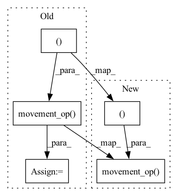

Pattern ID :406
Before Change
px_ = (w.shape[3] - 1) * C.dx - xdw.shape[3] - C.px + C.sx * (grad_output_dw.shape[3]-1) + 1
Cdw = get_conv_args(xdw.shape, grad_output_dw.shape, padding=(C.px, px_, C.py, py_), stride=(C.dy, C.dx), dilation=(C.sy, C.sx), groups=C.groups)
grad_weight = ctx._conv(xdw, grad_output_dw, Cdw)
dw = grad_weight.movement_op( MovementOps.PERMUTE, (1,0,2,3 ))
return dx, dw
After Change
py_ = (w.shape[2] - 1) * C.dy - xdw.shape[2] - C.py + C.sy * (grad_output_dw.shape[2]-1) + 1
px_ = (w.shape[3] - 1) * C.dx - xdw.shape[3] - C.px + C.sx * (grad_output_dw.shape[3]-1) + 1
Cdw = get_conv_args(xdw.shape, grad_output_dw.shape, padding=(C.px, px_, C.py, py_), stride=(C.dy, C.dx), dilation=(C.sy, C.sx), groups=C.groups)
dw = ctx._conv(xdw, grad_output_dw, Cdw).movement_op( MovementOps.PERMUTE, (1,0,2,3 ))
return dx, dw
In pattern: SUPERPATTERN
Frequency: 3
Non-data size: 5
Instances Fragment ID: 2350291
Project Name: geohot/tinygrad
Commit Name: 4d4ea47ca71533192a174e00c863b4ea58be35cf
Time: 2022-07-03
Author: geohot@gmail.com
File Name: tinygrad/mlops.py
M Class Name: Conv2D
N Class Name: Conv2D
M Method Name: backward(2)
N Method Name: backward(2)
M Parent Class: Function
N Parent Class: Function
M File Name: tinygrad/mlops.py
N File Name: tinygrad/mlops.py
M Start Line: 189
M End Line: 195
N Start Line: 191
N End Line: 196
Before Change
if ctx.needs_input_grad[1]: // compute derivative of weights using ProcessingOps.CONV
xdw = x.movement_op(MovementOps.RESHAPE, (C.bs, C.groups, C.cin, C.iy, C.ix))
xdw = xdw.movement_op( MovementOps.PERMUTE, (2,1,0,3,4 ))
xdw = xdw.movement_op(MovementOps.RESHAPE, (C.cin, C.groups*C.bs, C.iy, C.ix))
grad_output_dw = grad_output.movement_op(MovementOps.PERMUTE, (1,0,2,3))
grad_output_dw = grad_output_dw.movement_op(MovementOps.RESHAPE, (C.cout, C.bs, C.oy, C.ox))
py_ = (w.shape[2] - 1) * C.dy - xdw.shape[2] - C.py + C.sy * (grad_output_dw.shape[2]-1) + 1After Change
dx = ctx._conv(xt, wt, Cdx)
if ctx.needs_input_grad[1]: // compute derivative of weights using ProcessingOps.CONV
xdw = x.movement_op(MovementOps.RESHAPE, (C.bs, C.groups, C.cin, C.iy, C.ix)).movement_op( MovementOps.PERMUTE, (2, 1, 0, 3, 4 ))
xdw = xdw.movement_op(MovementOps.RESHAPE, (C.cin, C.groups*C.bs, C.iy, C.ix))
grad_output_dw = grad_output.movement_op(MovementOps.PERMUTE, (1,0,2,3))
py_ = (w.shape[2] - 1) * C.dy - xdw.shape[2] - C.py + C.sy * (grad_output_dw.shape[2]-1) + 1
px_ = (w.shape[3] - 1) * C.dx - xdw.shape[3] - C.px + C.sx * (grad_output_dw.shape[3]-1) + 1 Fragment ID: 2350289
Project Name: geohot/tinygrad
Commit Name: 02cd8510cb09bb739861d938b8ee572866f2ad3d
Time: 2022-07-03
Author: geohot@gmail.com
File Name: tinygrad/mlops.py
M Class Name: Conv2D
N Class Name: Conv2D
M Method Name: backward(2)
N Method Name: backward(2)
M Parent Class: Function
N Parent Class: Function
M File Name: tinygrad/mlops.py
N File Name: tinygrad/mlops.py
M Start Line: 171
M End Line: 194
N Start Line: 179
N End Line: 188
Before Change
// undo hack for non multiples of 4 on C.rcout
if added_output_channels != 0:
ret = ret.movement_op(MovementOps.RESHAPE, (C.bs, C.oy, C.ox, C.groups, C.rcout))
xs = [(0, s ) for s in ret.shape]
xs[4] = (0, ret.shape[4]-added_output_channels)
ret = ret.movement_op( MovementOps.SHRINK, xs)
C = C._replace(rcout = C.rcout - added_output_channels, cout = C.groups * (C.rcout - added_output_channels))
ret = ret.movement_op(MovementOps.RESHAPE, (C.bs, C.oy, C.ox, C.cout))
ret = ret.movement_op(MovementOps.PERMUTE, (0,3,1,2))After Change
// undo hack for non multiples of 4 on C.rcout
if added_output_channels != 0:
ret = ret.movement_op(MovementOps.RESHAPE, (C.bs, C.oy, C.ox, C.groups, C.rcout))
ret = ret.movement_op( MovementOps.SHRINK, [(0, s-added_output_channels) if i == 4 else (0, s ) for i,s in enumerate(ret.shape)])
C = C._replace(rcout = C.rcout - added_output_channels, cout = C.groups * (C.rcout - added_output_channels))
ret = ret.movement_op(MovementOps.RESHAPE, (C.bs, C.oy, C.ox, C.cout))
ret = ret.movement_op(MovementOps.PERMUTE, (0,3,1,2)) Fragment ID: 2350294
Project Name: geohot/tinygrad
Commit Name: 3acf62d4896f51f9fbf005a9ff882afd23b6eb6b
Time: 2023-01-25
Author: geohot@gmail.com
File Name: tinygrad/lazy.py
M Class Name: LazyBuffer
N Class Name: LazyBuffer
M Method Name: processing_op(4)
N Method Name: processing_op(4)
M Parent Class:
N Parent Class:
M File Name: tinygrad/lazy.py
N File Name: tinygrad/lazy.py
M Start Line: 253
M End Line: 352
N Start Line: 253
N End Line: 344